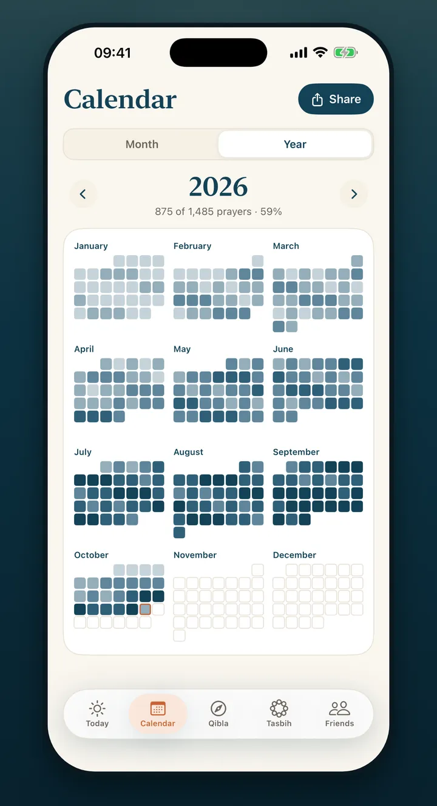
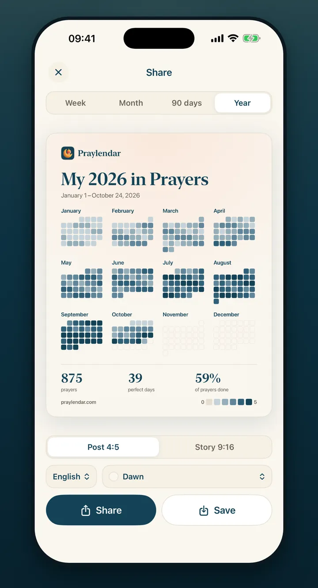

How Praylendar works
Five prayers.
One visual rhythm.
Praylendar keeps daily prayer tracking intentionally small: check what you completed and let the calendar build itself.

1
Check your five daily prayers
Open Today and tap Fajr, Dhuhr, Asr, Maghrib and Isha. There is no score to calculate and no long form to complete.
- Each prayer with its time for your city
- Cycle mode for sisters
- One tap per prayer, saved straight away

2
See the month become a picture
Every tracked day receives a color based on the number of prayers completed. The calendar makes consistency visible without turning worship into a dense dashboard.
01234All fiveCycle day

3
Review and share your prayer calendar
Move from a week to a full year, then export a clean card for messages or social posts. Exports are available to every Praylendar user.
- Week, month, 90-day, goal and year recaps
- Cards and stories in eight languages
- Your calendar remains private until you share it
Start your year in prayers.
Free on the App Store, for iPhone. Every prayer you log colors a square.
Download on theApp Store